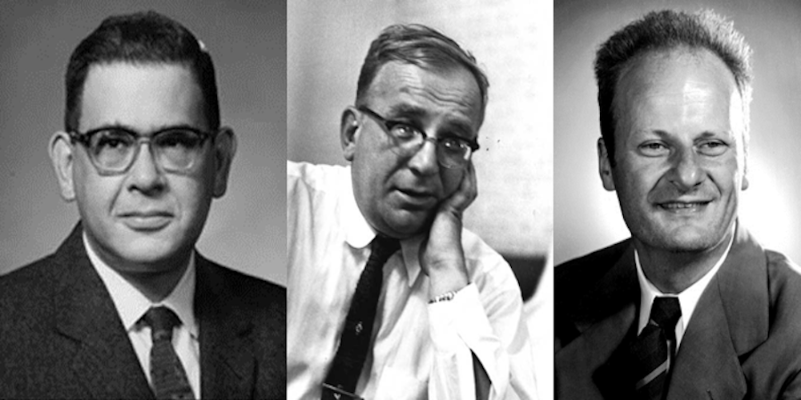
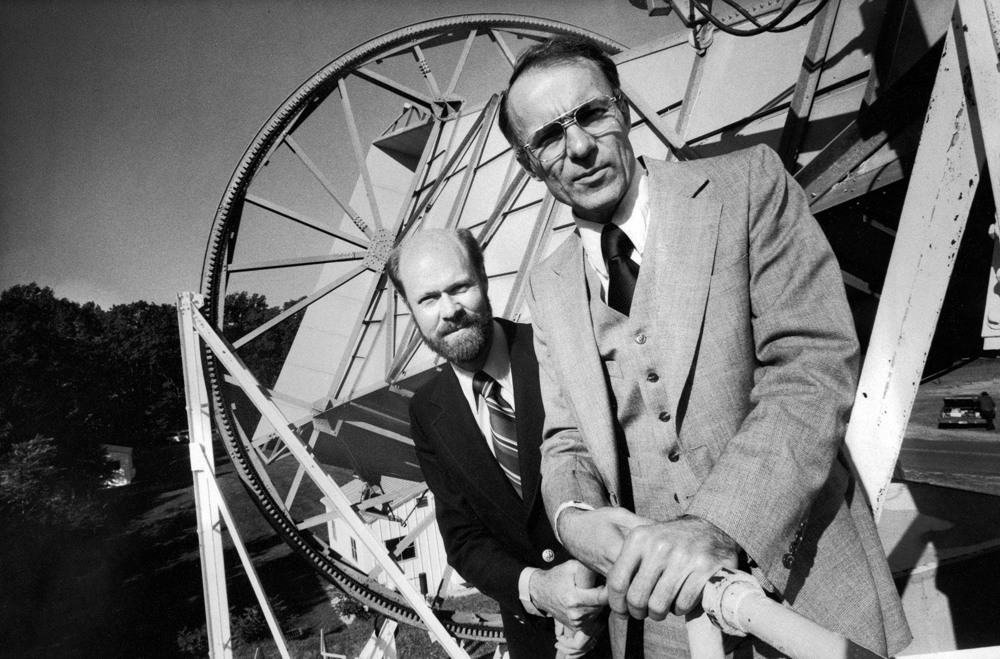
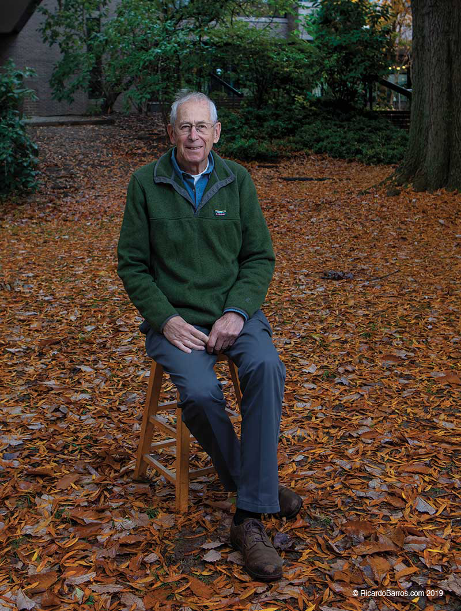

Un poquito de Historia
Esta sección de la página contiene un poquito de historia sobre la cosmología, la teoría de cuerdas y como ambas se encontraron a finales del siglo XX y su fusión dió lugar a la cosmología de cuerdas.
 Nuestra historia comienza con la publicación de Einstein sobre Los Fundamentos de la Teoría General de la Relatividad en 1916. Esta teoría proporcionó un formalismo bastante sólido para estudiar la gravedad desde un nuevo punto de vista. No como una fuerza, como ya proponía el paradigma Newtoniano, sino como resultado de la curvatura del espacio-tiempo, curvado por la presencia de objetos masivos y energía. Esta poderosa maquinaria parecía ser la correcta para describir el comportamiento a gran escala del cosmos. De hecho, fue el propio Albert quien comenzó dicha tarea.
Nuestra historia comienza con la publicación de Einstein sobre Los Fundamentos de la Teoría General de la Relatividad en 1916. Esta teoría proporcionó un formalismo bastante sólido para estudiar la gravedad desde un nuevo punto de vista. No como una fuerza, como ya proponía el paradigma Newtoniano, sino como resultado de la curvatura del espacio-tiempo, curvado por la presencia de objetos masivos y energía. Esta poderosa maquinaria parecía ser la correcta para describir el comportamiento a gran escala del cosmos. De hecho, fue el propio Albert quien comenzó dicha tarea.
En tal momento, no estaba muy claro cuán grande era el cosmos. Algunos afirmaban que solo contenía nuestra galaxia Vía Láctea, mientras que otros decían que era más grande, un lugar donde podrían caber muchas otras galaxias como la nuestra. Esto no cambió el hecho de que las primeras observaciones, sazonadas con algunas creencias, apuntaban a un universo estático que evitaba el colapso gravitacional, como predecía el principio de relatividad. Albert se dió cuenta de esto y, sesgado por la idea de un universo "eterno", introdujo una constante en su ecuación, Λ. Esta constante cosmológica podría actuar como un contrapeso al mencionado colapso gravitacional, empujando el cosmos "hacia afuera" de tal manera que lo mantendría estático. Eterno. Hermoso.
 Pero Einstein no era el único que se estaba divertiendo con la teoría de la relatividad general. En 1919, un matemático alemán, Theodor Kaluza, compartió con Einstein una idea bastante novedosa; ¿qué tal si intentamos describir la teoría electromagnética de Maxwell y la Relatividad General usando el mismo formalismo? La propuesta, que luego fue publicada en 1921, parecía funcionar pero con un precio interesante: Se necesitaba una dimensión adicional para acomodar las ecuaciones de Maxwell y Einstein en el mismo formalismo... Esto era de poco interés para Sir Arthur Stanley Eddington, quien estaba interesado en la fotografía. Quería tomar algunas buenas fotos del eclipse que tuvo lugar el 29 de mayo de ese mismo año. Por supuesto, su intención no era publicarlas en Instagram, sino encontrar evidencia de que la teoría de Einstein funcionaba. En una serie de artículos escritos por el caballero holandés Willem de Sitter, se mostró que según la relatividad general, cualquier cuerpo masivo deformaría la geometría del espacio-tiempo, creando una lente gravitacional que obligaría a los rayos de luz a "curvarse" a medida que pasan cerca del objeto masivo que causa la deformación. Esto llevó a Arthur a iniciar la expedición, tomando fotos donde los rayos de luz de las estrellas, fácilmente visibles en la oscuridad del eclipse, se doblaban según lo predicho por la teoría de Einstein. Primer gol del partido para Einstein.
Pero Einstein no era el único que se estaba divertiendo con la teoría de la relatividad general. En 1919, un matemático alemán, Theodor Kaluza, compartió con Einstein una idea bastante novedosa; ¿qué tal si intentamos describir la teoría electromagnética de Maxwell y la Relatividad General usando el mismo formalismo? La propuesta, que luego fue publicada en 1921, parecía funcionar pero con un precio interesante: Se necesitaba una dimensión adicional para acomodar las ecuaciones de Maxwell y Einstein en el mismo formalismo... Esto era de poco interés para Sir Arthur Stanley Eddington, quien estaba interesado en la fotografía. Quería tomar algunas buenas fotos del eclipse que tuvo lugar el 29 de mayo de ese mismo año. Por supuesto, su intención no era publicarlas en Instagram, sino encontrar evidencia de que la teoría de Einstein funcionaba. En una serie de artículos escritos por el caballero holandés Willem de Sitter, se mostró que según la relatividad general, cualquier cuerpo masivo deformaría la geometría del espacio-tiempo, creando una lente gravitacional que obligaría a los rayos de luz a "curvarse" a medida que pasan cerca del objeto masivo que causa la deformación. Esto llevó a Arthur a iniciar la expedición, tomando fotos donde los rayos de luz de las estrellas, fácilmente visibles en la oscuridad del eclipse, se doblaban según lo predicho por la teoría de Einstein. Primer gol del partido para Einstein.
 Ya por 1920 la teoría de Einstein seguía siendo el tema de conversación y la gente seguía utilizando el formalismo para desentrañar los misterios del cosmos. ¿Recuerdas que la gente no estaba muy segura de cuán grande era el cosmos? Bueno, este enfrentamiento tuvo su clímax durante el debate celebrado el 26 de abril de 1920 en el Museo Nacional de Historia Natural de Smithsonian, Washington. En un rincón del ring, Harlow Sharpley. Enfrente de él, Heber Curtis. Mientras el primero defendía que solo la Vía Láctea suponía la totalidad del universo, el segundo argumentaba que algunas nebulosas observadas eran de hecho galaxias separadas de la nuestra, ubicadas mucho más allá de la Vía Láctea. El argumento de Sharpley se basaba en gran medida en sus observaciones de la distribución de estrellas dentro de la Vía Láctea. Por otro lado, Curtis defendía que las medidas de luminosidad de las supernovas sugerían que esos puntos brillantes estaban demasiado alejados para ser parte de nuestra galaxia. Sin embargo, ninguna de las evidencias fue concluyente, por lo que el debate terminó en empate, a la espera de evidencias observacionales que pudieran probar una u otra hipótesis.
Ya por 1920 la teoría de Einstein seguía siendo el tema de conversación y la gente seguía utilizando el formalismo para desentrañar los misterios del cosmos. ¿Recuerdas que la gente no estaba muy segura de cuán grande era el cosmos? Bueno, este enfrentamiento tuvo su clímax durante el debate celebrado el 26 de abril de 1920 en el Museo Nacional de Historia Natural de Smithsonian, Washington. En un rincón del ring, Harlow Sharpley. Enfrente de él, Heber Curtis. Mientras el primero defendía que solo la Vía Láctea suponía la totalidad del universo, el segundo argumentaba que algunas nebulosas observadas eran de hecho galaxias separadas de la nuestra, ubicadas mucho más allá de la Vía Láctea. El argumento de Sharpley se basaba en gran medida en sus observaciones de la distribución de estrellas dentro de la Vía Láctea. Por otro lado, Curtis defendía que las medidas de luminosidad de las supernovas sugerían que esos puntos brillantes estaban demasiado alejados para ser parte de nuestra galaxia. Sin embargo, ninguna de las evidencias fue concluyente, por lo que el debate terminó en empate, a la espera de evidencias observacionales que pudieran probar una u otra hipótesis.
Aunque la visión del universo de Curtis era gigantesca, había personas que querían hacerlo aún más grande. Este fue el caso del físico soviético Alexander Friedmann, quien introdujo la idea de un universo en expansión con geometrías generalizadas (abiertas, planas y cerradas) en 1922. La motivación principal para este proyecto fue que la solución estática propuesta por Einstein parecía inestable; la más mínima perturbación causaría que el universo colapsara o se expandiera. Sin embargo, a Einstein no le gustó esta idea y en su lugar trabajó en revisar sus ecuaciones para apoyar el universo estático y eterno.
 ¿Recuerdas el gran debate comentado anteriormente? Bueno, el veredicto tuvo que esperar hasta 1924, cuando Edwin Hubble identificó variables Cefeidas en varias nebulosas. Las estrellas Cefeidas se consideran una candela estándar descubierta por Henrietta Leavitt. La distancia a estos objetos se puede determinar comparando su luminosidad aparente con su luminosidad intrínseca. Sus observaciones demostraron de manera concluyente que aquellas nebulosas que contienen variables Cefeidas estaban demasiado distantes para ser parte de la Vía Láctea. Por lo tanto, eran galaxias enteras fuera de la nuestra. Ganador del combate: Curtis.
¿Recuerdas el gran debate comentado anteriormente? Bueno, el veredicto tuvo que esperar hasta 1924, cuando Edwin Hubble identificó variables Cefeidas en varias nebulosas. Las estrellas Cefeidas se consideran una candela estándar descubierta por Henrietta Leavitt. La distancia a estos objetos se puede determinar comparando su luminosidad aparente con su luminosidad intrínseca. Sus observaciones demostraron de manera concluyente que aquellas nebulosas que contienen variables Cefeidas estaban demasiado distantes para ser parte de la Vía Láctea. Por lo tanto, eran galaxias enteras fuera de la nuestra. Ganador del combate: Curtis.
La segunda mitad de los años veinte se volvió bastante emocionante en lo que respecta a nuestra comprensión de las escalas más grandes y más pequeñas del universo. Para empezar, un físico teórico sueco llamado Oskar Klein propuso una versión cuantizada del formalismo de cinco dimensiones de Kaluza.
 Las dimensiones visibles (las tres espaciales más el tiempo) fueron la principal preocupación de Georges Lemaître, un sacerdote y físico belga, quien en 1927 propuso un modelo de universo en expansión, similar al de Friedmann. Cuando Lemaître conoció a Einstein en una conferencia ese mismo año, discutieron la última propuesta del primero. Einstein le dijo que Friedmann había sugerido algo similar cinco años antes, pero seguía siendo algo escéptico acerca de esta idea. Se cree que Einstein compartió los siguientes pensamientos con Lemaître: "Vos calculs sont corrects, mais votre physique est abominable". (Tus cálculos son correctos, pero tu física es abominable). El bueno Albert tuvo que retractarse de estas palabras dos años después, cuando Hubble mostró que los espectros de absorción de la mayoría de las galaxias estaban desplazados al rojo. ¡Según el efecto Doppler, esto significaba que se estaban "alejando" de nosotros! ¡Friedmann tenía razón! Fue en este momento en el que Einstein señaló que haber introducido la constante cosmológica para mantener al universo en un estado estático fue su mayor error. En los siguientes trabajos de su investigación cosmológica, descartó este término, afirmando que era "teóricamente insatisfactorio en cualquier caso".
Las dimensiones visibles (las tres espaciales más el tiempo) fueron la principal preocupación de Georges Lemaître, un sacerdote y físico belga, quien en 1927 propuso un modelo de universo en expansión, similar al de Friedmann. Cuando Lemaître conoció a Einstein en una conferencia ese mismo año, discutieron la última propuesta del primero. Einstein le dijo que Friedmann había sugerido algo similar cinco años antes, pero seguía siendo algo escéptico acerca de esta idea. Se cree que Einstein compartió los siguientes pensamientos con Lemaître: "Vos calculs sont corrects, mais votre physique est abominable". (Tus cálculos son correctos, pero tu física es abominable). El bueno Albert tuvo que retractarse de estas palabras dos años después, cuando Hubble mostró que los espectros de absorción de la mayoría de las galaxias estaban desplazados al rojo. ¡Según el efecto Doppler, esto significaba que se estaban "alejando" de nosotros! ¡Friedmann tenía razón! Fue en este momento en el que Einstein señaló que haber introducido la constante cosmológica para mantener al universo en un estado estático fue su mayor error. En los siguientes trabajos de su investigación cosmológica, descartó este término, afirmando que era "teóricamente insatisfactorio en cualquier caso".
Sin embargo, hubo un problema con el descubrimiento de Hubble. La comunidad científica no quería aceptar que las galaxias se estuvieran alejando de nosotros, ya que significaría que nuestra galaxia está en un lugar muy especial en el universo, como si fuera el centro de éste. Esta idea fue rápidamente refutada por Lemaître, quien logró demostrar que las galaxias no se están alejando de nosotros, ¡sino que el tejido del espacio-tiempo mismo se está expandiendo! Las galaxias permanecen estáticas en un punto del espacio, mientras este se estira en todas direcciones. Estos y otros resultados fueron recopilaron en varios trabajos entre 1927 y 1933, cuando Lemaître publicó un resumen final con una nueva idea bastante controvertida. En este artículo, propuso que si uno extrapolara esta expansión cósmica hacia atrás en el tiempo, el universo se encogería y se encogería con menos y menos materia, describiendo un cosmos cada vez más concentrado precedido por una singularidad en la que los conceptos clásicos de espacio y tiempo pierden su significado. Lemaître llamó a este estado especial el Átomo Primordial, un estado con densidad y temperatura inicial que está muy por encima de la capacidad de replicación de la humanidad, donde las leyes de la mecánica cuántica regirían. La comunidad científica recibió esta propuesta con preocupación, ya que pensaban que la idea de Lemaître estaba sesgada por sus creencias religiosas y había sido manipulada para encontrar evidencia de una Creación Divina.
Como todos sabemos, los años finales de los treinta y principios de los cuarenta fueron años terribles para el mundo entero, pero la ciencia no se durmió en los laureles. Especialmente con el progreso en física nuclear gracias a Oppenheimer, Fermi, Bethe, entre otros, para desarrollar algo que tenía que ver con un niño pequeño y un hombre gordo (Little Boy and Fat Man, nombres de las bombas nucleares). En cualquier caso, no fue hasta 1948 que la cosmología volvió al primer plano de la investigación. Ralph Alpher, Hans Bethe y George Gamow publicaron el 1 de abril (Día de los Santos Inocentes en el mundo anglosajón) un artículo en el que mostraban que si el átomo primordial de Lemaître era correcto, entonces todos los elementos ligeros (es decir, hidrógeno, helio y litio) que decoran el universo deberían haber sido creados durante la rápida expansión del estado del átomo primordial. Este proceso de creación de elementos se conoce como nucleosíntesis. También predijeron la existencia de un resplandor remanente de radiación de este estado inicial y caliente que estaría aún esparcido por todo el universo. Sin embargo, de manera similar a lo que sucedió con el trabajo de Lemaître, esta propuesta también fue ridiculizada, en parte debido a la elección de nombres (alpha-beta-gamma, primeras letras del abecedario griego) de los autores y en parte debido a la falta de descripciones matemáticas detalladas. El astrónomo inglés Fred Hoyle, firme defensor del estado estacionario del universo, se refirió peyorativamente a esta propuesta como la "teoría del Big Bang" durante una transmisión de radio de la BBC en 1949. El lector probablemente esté familiarizado con este apodo...
La década de los cincuenta no trajo grandes avances en cuanto a la cosmología, pero sí en el desarrollo de la mecánica cuántica aplicada a los campos clásicos. Parte del conocimiento adquirido en física nuclear durante la década anterior dio sus frutos en esta década, cuando Richard Feynmann, Julian Schwinger, Freeman Dyson y Shinichiro Tomonaga lograron ganar la "guerra contra los infinitos" mediante el desarrollo del método de renormalización. Además, Feynmann introdujo la formulación de la integral de camino y sus famosos diagramas, una herramienta visual para organizar intuitivamente y ayudar a calcular términos en la mencionada expansión perturbativa. Todos estos avances llevaron a la Teoría Cuántica de Campos (TCC, o QFT en inglés) como un formalismo teórico completo.
Aunque este gran progreso siguió brillando con el desarrollo teórico del Modelo Estándar de la física de partículas durante las décadas de los sesenta y setenta, no fue hasta 1964 que Lemaître y los caballeros α-β-γ obtuvieron su redención. En ese año, Robert Wilson y Arno Penzias estaban realizando pruebas y experimentos con la Antena de Cuerno de Holmdel en los Laboratorios Bell en el municipio de Holmdel, Nueva Jersey. Descubrieron una fuente de ruido en la atmósfera que no podían explicar. Primero pensaron que era una señal de radio proveniente de la ciudad de Nueva York. Otras posibilidades para la fuente del ruido eran algunos efectos secundarios de una prueba de bomba atómica que se había realizado sobre el Pacífico varios años antes. O incluso peor; caquitas de paloma sobre la radio-antena. Después de un año entero de pruebas y más pruebas, los científicos concluyeron que habían detectado la radiación cósmica de fondo (RCF, o CMB en inglés), el resplandor remanente de radiación emitida por el universo en los primeros tiempos después del Big Bang, como predijeron los caballeros α-β-γ. Esto confirmó su propuesta de nucleosíntesis. Y por extensión, nuestro sacerdote belga favorito resultó tener razón. El universo había comenzado en un estado muy caliente y denso. Poco después de que comenzara a expandirse y enfriarse, se habían creado elementos ligeros y dicha radiación detectada era la evidencia de ello.
 Del mismo modo, en los años setenta, Stephen Hawking y Roger Penrose lograron demostrar que desde la perspectiva de la relatividad general, una singularidad en el universo temprano era inevitable, proporcionando más evidencia matemática para la teoría del Big Bang. Las pistas eran claras: se necesitaba un enfoque formal cuántico para la cosmología, ya que el universo primitivo había estado en un estado donde la relatividad general fallaría y los efectos cuánticos se vuelven importantes. En principio, se puede intentar cuantizar la relatividad general siguiendo el formalismo de la mecánica cuántica y aplicando la perturbación de la integral de camino desarrollada por Feynmann en los años cincuenta. Sin embargo, esto comenzaría una nueva guerra de infinitos que nunca se podría ganar. El número de contra-terminos sería infinito, introduciendo demasiadas variables en el juego y perdiendo el control de la teoría. Esto no impidió que Hartle, Hawking y Vilenkin, entre otros, intentaran un enfoque semi-cuántico de la cosmología, donde el estado del universo se describe por su función de onda. Sin embargo, pronto se dieron cuenta de que uno necesita especificar una buena elección de condiciones de contorno del universo para determinar qué solución, proveniente de una ecuación similar a la de Schrödinger, describe el estado que observamos. Pero, ¿cómo se pueden elegir las condiciones de contorno correctas sin dejar que el sistema a describir?
Del mismo modo, en los años setenta, Stephen Hawking y Roger Penrose lograron demostrar que desde la perspectiva de la relatividad general, una singularidad en el universo temprano era inevitable, proporcionando más evidencia matemática para la teoría del Big Bang. Las pistas eran claras: se necesitaba un enfoque formal cuántico para la cosmología, ya que el universo primitivo había estado en un estado donde la relatividad general fallaría y los efectos cuánticos se vuelven importantes. En principio, se puede intentar cuantizar la relatividad general siguiendo el formalismo de la mecánica cuántica y aplicando la perturbación de la integral de camino desarrollada por Feynmann en los años cincuenta. Sin embargo, esto comenzaría una nueva guerra de infinitos que nunca se podría ganar. El número de contra-terminos sería infinito, introduciendo demasiadas variables en el juego y perdiendo el control de la teoría. Esto no impidió que Hartle, Hawking y Vilenkin, entre otros, intentaran un enfoque semi-cuántico de la cosmología, donde el estado del universo se describe por su función de onda. Sin embargo, pronto se dieron cuenta de que uno necesita especificar una buena elección de condiciones de contorno del universo para determinar qué solución, proveniente de una ecuación similar a la de Schrödinger, describe el estado que observamos. Pero, ¿cómo se pueden elegir las condiciones de contorno correctas sin dejar que el sistema a describir?
Aunque el problema de la condición de contorno dejó a los cosmólogos cuánticos en una discusión interminable sobre la interpretación correcta, no todo estaba perdido. A principios de los setenta, en un intento por describir algunas de las interacciones fundamentales de los constituyentes del núcleo atómico, Yoichiro Nambu, Holger Nielsen y Leonard Susskind presentaron una nueva interpretación física de estas interacciones. En este enfoque, inspirado en el trabajo de Gabriel Veneziano, las fuerzas nucleares podrían describirse como cuerdas vibrantes unidimensionales. Sin embargo, esta descripción de cuerdas de la fuerza fuerte hizo muchas predicciones que estaban en contradicción directa con los resultados experimentales, lo que hacía que esta propuesta fuera irrelevante ... hasta 1974. Ese año, John Schwarz, Joël Scherk y Taimiki Yonega encontraron que uno de los modos vibratorios de estas cuerdas cerradas unidimensionales podría tener propiedades que coincidan exactamente con las del gravitón, la partícula mensajera hipotética de la fuerza gravitacional. ¿Podría esta nueva teoría ser la forma de hacer que la gravedad cuántica sea una realidad?
 Este descubrimiento se convirtió en el punto de partida para las dos principales revoluciones en la teoría de cuerdas que tuvieron lugar en los años ochenta y noventa. Durante estas dos décadas, los físicos teóricos progresaron desentrañando los misterios de esta prometedora teoría, capaz de describir no solo la gravedad cuántica, sino también todas las partículas elementales (en forma de diferentes modos vibratorios de las cuerdas) y todas las interacciones entre ellas. Una teoría para explicar la relatividad general y el modelo estándar de la física de partículas utilizando el mismo formalismo. El precio a pagar fue seis veces mayor que el trabajo de Kaluza-Klein; Se necesitaban un total de diez dimensiones para que la teoría tuviera sentido (al menos evitando anomalías cuánticas). Esto no preocupó mucho a Philip Candelas, Gary Horowitz, Andrew Strominger y Edward Witten, quienes, inspirados por el trabajo seminal de Kaluza y Klein en los años veinte, demostraron que las seis dimensiones extra estarían compactificadas en una variedad de Calabi-Yau, un espacio seis dimensional pequeño y cerrado.
Este descubrimiento se convirtió en el punto de partida para las dos principales revoluciones en la teoría de cuerdas que tuvieron lugar en los años ochenta y noventa. Durante estas dos décadas, los físicos teóricos progresaron desentrañando los misterios de esta prometedora teoría, capaz de describir no solo la gravedad cuántica, sino también todas las partículas elementales (en forma de diferentes modos vibratorios de las cuerdas) y todas las interacciones entre ellas. Una teoría para explicar la relatividad general y el modelo estándar de la física de partículas utilizando el mismo formalismo. El precio a pagar fue seis veces mayor que el trabajo de Kaluza-Klein; Se necesitaban un total de diez dimensiones para que la teoría tuviera sentido (al menos evitando anomalías cuánticas). Esto no preocupó mucho a Philip Candelas, Gary Horowitz, Andrew Strominger y Edward Witten, quienes, inspirados por el trabajo seminal de Kaluza y Klein en los años veinte, demostraron que las seis dimensiones extra estarían compactificadas en una variedad de Calabi-Yau, un espacio seis dimensional pequeño y cerrado.
Entre todas las líneas de investigación de la teoría de cuerdas que surgieron durante estas dos décadas, hubo una llamada cosmología de cuerdas. El objetivo principal de esta línea era reproducir las características cosmológicas de las cuatro dimensiones observadas a partir del formalismo de diez dimensiones proporcionado por la teoría de cuerdas. La idea era simple: empezar con la teoría de dimensiones y ocultar algunas dimensiones adicionales compactificándolas en una variedad de Calabi-Yau. La teoría de cuatro dimensiones resultante tendría una energía de vacío asociada con la constante cosmológica que Einstein introdujo en sus ecuaciones. Sin embargo, esto no era un problema importante, ya que el consenso general y las observaciones desde la década de los treinta apuntaban a una cosmología en expansión y no a un universo estático. Entonces, ¿el valor de la constante cosmológicatenía que ser cero, verdad?
Esto cambió abruptamente a finales del Milenio. Dos proyectos independientes que estudiaban supernovas (la muerte de una estrella, que emite una potente luz) encontraron que el corrimiento al rojo de estas explosiones no coincidía con la tasa de expansión detectada por Hubble. De hecho, todos los datos apuntaban a una tasa de expansión acelerada. En otras palabras; la expansión confirmada del universo, una vez propuesta por Lemaître, ¡se estaba acelerando cada vez más! Desde un punto de vista teórico, era hora de desempolvar la constante cosmológica de Einstein Λ. Una expansión acelerada del universo podría explicarse por un valor positivo y realmente pequeño de la constante cosmológica Λ. Esto sería equivalente a una energía de vacío con un valor positivo. Como la naturaleza de esta energía era completamente desconocida yno se podía detectar sino inferir de la observación de la expansión, se le llamó "energía oscura". Las reglas del juego de la cosmología de cuerdas habían cambiado después de este descubrimiento. La energía de vacío ya no era trivial, sino pequeña, realmente pequeña y positiva. De esta manera, se podría proporcionar una explicación sobre la evolución del universo desde un punto de vista microscópico, es decir, el de una teoría de la gravedad cuántica. Este cambio importante atrajo la atención de gran parte de la comunidad de física teórica para lograr algo que parecía bastante simple; obtener una descripción de la energía oscura a partir de la teoría de cuerdas.
Es 2024 y todavía estamos buscando un único modelo capaz de reproducir la energía oscura a partir de la teoría de cuerdas. ¿Qué pudo haber salido mal?